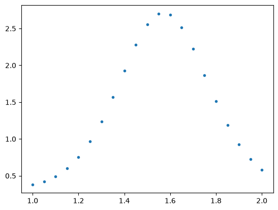
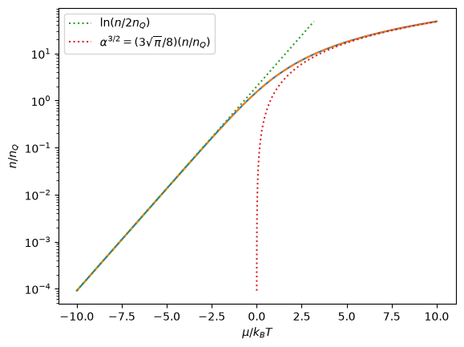
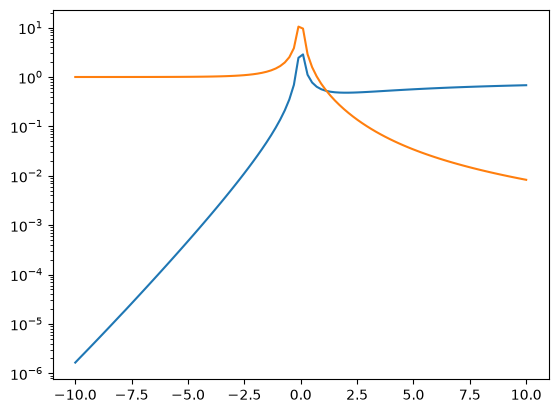
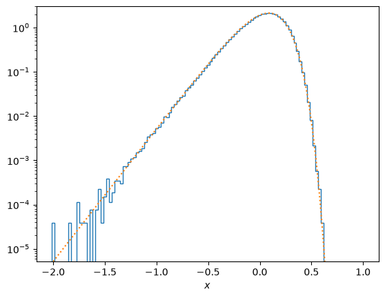
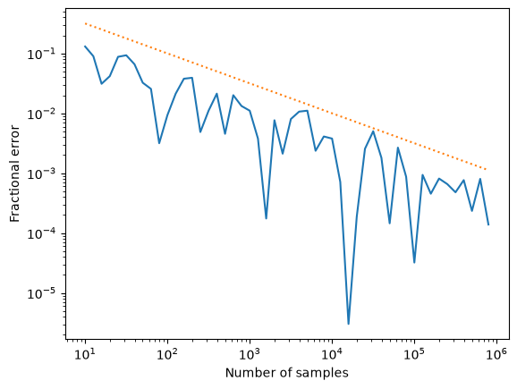

Homework 2 solutions#
1. Integration error#
import numpy as np
import matplotlib.pyplot as plt
import scipy.integrate
import scipy.interpolate
# First, generate the file 'hw2_data.txt' -- this is given to you in the homework,
# but here is how I generated it
# Also I calculate the 'true' value of the integral
x = np.linspace(1.0,2.0,21)
func = lambda x: np.exp(np.sin(5*x))
f = func(x)
plt.plot(x,f,".")
plt.show()
np.savetxt('hw2_data.txt', np.column_stack((x,f)))
# Calculate the integral
I0, err0 = scipy.integrate.quad(func,1,2)
print("I, err=", I0,err0)

I, err= 1.4829743447687127 5.408170986441626e-14
# Read in the data
xp, fp = np.loadtxt('hw2_data.txt', unpack=True)
plt.plot(xp,fp,'.')
plt.show()
# Now carry out two different integrations and compare to estimate the error
# Trapezoid
I1 = scipy.integrate.trapezoid(fp,xp)
I2 = scipy.integrate.trapezoid(fp[::2], xp[::2])
print(I1, I2, (I1-I2)/3, I1-I0)
# Simpson
I3 = scipy.integrate.simpson(fp,xp)
I4 = scipy.integrate.simpson(fp[::2], xp[::2])
print(I3, I4, (I3-I4)/15, I3-I0)
# Ratio
print("Ratio of errors = ",((I1-I2)/3) / ((I3-I4)/15))
N=21
print("N^2 = 21^2 = ", N*N)
print("1/N^2 = %g; 1/N^4 = %g" % (1/N**2, 1/N**4))
1.4823547292600145 1.4805073649598721 0.0006157881000474763 -0.000619615508698157
1.4829705173600622 1.4829048187332472 4.379908454336482e-06 -3.827408650458608e-06
Ratio of errors = 140.59382895041875
N^2 = 21^2 = 441
1/N^2 = 0.00226757; 1/N^4 = 5.14189e-06
We can see that the error estimates are very close to the true values!
2. Chemical potential of a Fermi gas#
First, rewrite the integral using \(x=\epsilon/ k_BT\), \(\alpha=\mu/k_BT\) and the definition of \(n_Q\):
\[{N\over Vn_Q} = {4\over\sqrt{\pi}} \int_0^\infty {x^{1/2} dx\over e^{x-\alpha}+1}\]
import numpy as np
import scipy.integrate
import matplotlib.pyplot as plt
pref = 4.0/np.sqrt(np.pi)
# in the next line we write the Fermi distribution with exp(-x) instead of exp(x-a)
# to avoid overflow errors
func = lambda x, a: pref * x**0.5 *np.exp(-x) / (np.exp(-a)+np.exp(-x))
# Values of a=mu/kT to evaluate the integral
a_vec = np.linspace(-10.0,10.0,100)
n_vec = np.zeros_like(a_vec)
for i, a in enumerate(a_vec):
n_vec[i], err = scipy.integrate.quad(func,0.0,np.inf,args=(a,))
# Now interpolate: use a spline
a_spline = scipy.interpolate.CubicSpline(n_vec,a_vec)
# Compute the non-degenerate and degenerate limits
a_nondeg = lambda n: np.log(n/2)
a_deg = lambda n: ((3*np.pi**0.5 /8)*n)**(2/3)
plt.plot(a_vec, n_vec)
plt.plot(a_spline(n_vec), n_vec, "--")
plt.plot(a_nondeg(n_vec), n_vec, ":", label=r'$\ln (n/2n_Q)$')
plt.plot(a_deg(n_vec), n_vec, ":", label=r'$\alpha^{3/2}=(3\sqrt{\pi}/8)(n/n_Q)$')
plt.legend()
plt.ylabel(r'$n/n_Q$')
plt.xlabel(r'$\mu/k_BT$')
plt.yscale('log')
plt.show()

# Find where the error crosses 0.01
err_nondeg = np.abs((a_nondeg(n_vec)-a_spline(n_vec))/a_spline(n_vec))
err_deg = np.abs((a_deg(n_vec)-a_spline(n_vec))/a_spline(n_vec))
plt.plot(a_spline(n_vec), err_nondeg)
plt.plot(a_spline(n_vec), err_deg)
plt.yscale('log')
plt.show()
ind = np.where(err_deg>0.01)
print(r'Degenerate limit is valid for n/n_Q>%g and mu/kT > %g'
% (n_vec[ind[0][-1]], a_spline(n_vec[ind[0][-1]])))
ind = np.where(err_nondeg<0.01)
print(r'Degenerate limit is valid for n/n_Q<%g and mu/kT < %g'
% (n_vec[ind[0][-1]], a_spline(n_vec[ind[0][-1]])))

Degenerate limit is valid for n/n_Q>41.18 and mu/kT > 8.9899
Degenerate limit is valid for n/n_Q<0.127874 and mu/kT < -2.72727
3. Sampling the Maxwell-Boltzmann distribution#
def MaxwellBoltzmann(N, quiet=False):
# Use a rejection method to draw energies for particles
# from a Maxwell-Boltzmann distribution
# The energies are measured in units of kT
# NB - we ask for N particles, but may get fewer back depending on the
# sampling efficiency
vmax = 5.0
nsamples = 5*N
x = vmax * np.random.rand(nsamples)
y = np.random.rand(nsamples) * np.exp(-1)
x_keep = x[y < x**2*np.exp(-x**2)]
if not quiet:
print('Acceptance fraction = ', len(x_keep)/nsamples)
return x_keep[:N]
import numpy as np
import matplotlib.pyplot as plt
import time
t0 = time.time()
# First draw a sample of photons from a Maxwell-Boltzmann distribution
T = 1.0
N = int(1e6)
v = MaxwellBoltzmann(N)
print('Time taken = ', time.time()-t0)
print('Number of velocities generated = ', len(v))
Acceptance fraction = 0.2409392
Time taken = 0.060935020446777344
Number of velocities generated = 1000000
# Compare the distribution of samples with the analytic one
plt.hist(np.log10(v), density=True, bins=100, histtype = 'step')
xvals = 10.0**np.linspace(-2.0,1.0,100)
fMB = (4/np.pi**0.5) * xvals**3 * np.exp(-xvals**2) * np.log(10.0)
plt.plot(np.log10(xvals), fMB, ":")
plt.yscale('log')
plt.ylim((fMB[0], 3))
plt.xlabel(r'$x$')
plt.show()

# Now investigate how the error scales with N (we expect 1/sqrt N)
nums = 10.0**np.arange(1.0,6.0,0.1)
errs = np.zeros_like(nums)
v_analytic = (4.0/np.pi)**0.5
for i, num in enumerate(nums):
N = int(num)
v = MaxwellBoltzmann(N, quiet=True)
v_mean = np.mean(v)
errs[i] = abs((v_mean-v_analytic)/v_analytic)
#print('N = ', N, ' Mean velocity =', v_mean, ' Error=', errs[i])
plt.loglog(nums,errs)
plt.plot(nums, 1/np.sqrt(nums), ":")
plt.xlabel('Number of samples')
plt.ylabel('Fractional error')
plt.show()
